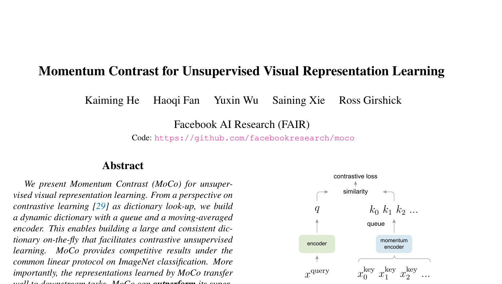
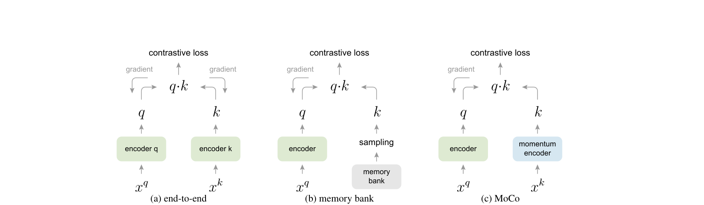
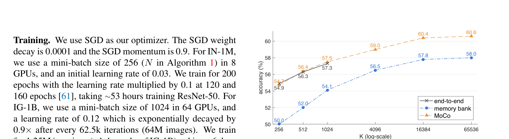

MoCo: Momentum Contrast for Unsupervised Visual Representation Learning¶
📄 论文链接：arXiv:1911.05722 | PDF
目录¶
核心要点¶
- MoCo（Momentum Contrast） 是 CVPR 2020 最佳论文提名，视觉领域对比学习的里程碑工作，由 FAIR 团队提出。
- 核心贡献：将对比学习重新建模为"动态字典查找"任务，通过 队列（Queue） 和 动量编码器（Momentum Encoder） 两大机制，构建一个既大又一致的字典，解决了此前方法在字典大小与特征一致性之间无法兼顾的矛盾。
- 关键方法：使用 InfoNCE loss 作为目标函数，采用 Instance Discrimination 作为代理任务；队列将字典大小与 batch size 解耦，动量更新（m=0.999）保证 key 编码器缓慢变化以维持特征一致性。
- 主要结论：MoCo 在 ImageNet Linear Classification 上达到或超过此前最优无监督方法；更重要的是，在 7 个下游视觉任务（检测、分割、关键点检测等）上全面超越 ImageNet 有监督预训练模型，首次在如此多主流任务上证明无监督表征学习可以匹敌甚至超越有监督预训练。
- 深远影响：证明了无监督学习在视觉领域的可行性，呼应了 Yann LeCun 关于"无监督学习才是蛋糕本体"的观点；其高效实现使普通 GPU 即可开展对比学习研究，激发了后续 SimCLR、BYOL、SimSiam、MAE 等一系列工作。
1. 背景与动机¶
1.1 对比学习的地位与意义¶
- MoCo 是视觉领域使用对比学习的里程碑式工作，CVPR 2020 最佳论文提名。
- 对比学习自 2019 年起成为视觉乃至整个机器学习领域最热门的方向之一，简单、好用、强大，盘活了自 2017 年以来竞争激烈的计算机视觉领域。
- MoCo 作为无监督表征学习方法，不仅在分类任务上逼近有监督基线，还在检测、分割、人体关键点检测等多个主流视觉任务上超越 ImageNet 有监督预训练模型，部分数据集上大幅超越。
- 从侧面验证了 Yann LeCun 在 NeurIPS 2016 演讲中的观点：如果把机器学习比作蛋糕，强化学习只是樱桃，有监督学习最多是糖霜，无监督学习才是蛋糕的本质。这一观点后来在 NLP 大模型（自监督预训练）和视觉领域逐步得到印证。
1.2 什么是对比学习¶
- 基本思想：给定若干图片，模型不需要知道具体类别标签，只需学会区分哪些图片相似、哪些不相似。将图片通过网络映射到特征空间后，相似图片的特征应尽量拉近，不相似图片的特征应尽量远离。
- 为何被称为无监督/自监督：虽然对比学习需要"相似/不相似"的监督信号，但在视觉领域，这一信号通过设计巧妙的 代理任务（Pretext Task） 人为定义，无需人工标注，因此属于自监督训练。
- 灵活性：只要能定义正负样本的规则，对比学习框架就成立。例如：
- 视频领域：同一视频的任意两帧为正样本，其他视频帧为负样本。
- NLP 领域（SimCSE）：同一句子经两次不同 dropout forward 得到的特征为正样本。
- CMC：同一物体的不同视角（正面/背面、RGB/深度图）为正样本。
- 多模态领域：CLIP 即为对比学习扩展到图文多模态的代表。
1.3 Instance Discrimination 代理任务¶
- 定义：对于无标注数据集中的每张图片 \(x_i\)，对其进行两次随机裁剪和数据增广（Transformation），得到 \(x_{i1}\) 和 \(x_{i2}\)，二者互为正样本对；数据集中其余所有图片均为负样本。
- 名称含义："个体判别"——每张图片自成一类，其余所有图片都属于不同类别。以 ImageNet 为例，不再是 1000 类，而是 128 万类（每张图片一个类）。
- 有了正负样本定义后，通过编码器提取特征，再使用对比学习目标函数（如 NCE Loss）进行训练即可。
1.4 视觉 vs. NLP 无监督学习的差异¶
- NLP：原始信号空间是离散的（单词、词根词缀），容易建立 Tokenize 字典，无监督学习易于建模和优化。
- 视觉：原始信号空间是连续且高维的，不像单词那样具有强语义信息和简洁表示，不适合直接建字典，导致无监督学习远不如有监督学习成熟。
1.5 前人工作的局限性¶
作者将对比学习统一视为"动态字典查找"问题，并指出好的字典需具备两个特性：
- 大：字典越大，越能从连续高维视觉空间中充分抽样，提供更丰富的负样本，避免模型学到 Shortcut Solution，提升泛化能力。
- 一致：字典中的所有 key 应由相同或相似的编码器生成，否则 query 可能匹配到使用相同编码器的 key 而非语义相同的 key，引入捷径解。
此前的对比学习方法至少受限于上述两个方面中的一个，这构成了 MoCo 的研究动机。
2. 方法¶

Figure 1: MoCo 动量对比学习框架2.1 对比学习作为字典查找¶

Figure 2: 三种对比学习机制对比- 将已编码的 query \(q\) 与字典中的一系列 key \(\{k_0, k_1, ..., k_K\}\) 进行匹配：让 \(q\) 与匹配的正样本 key \(k_+\) 相似，与其他负样本 key 远离。
- 整个学习过程转化为最小化对比学习目标函数的问题。
- MoCo 论文中较少使用 anchor/positive/negative 等术语，而统一使用 query 和 key。
2.2 InfoNCE Loss¶
2.2.1 从 Softmax 到 NCE 再到 InfoNCE¶
- Softmax + Cross Entropy：在有监督学习中，类别数 \(K\) 固定（如 ImageNet 为 1000）。但在 Instance Discrimination 下，\(K\) 等于数据集图片数量（如 128 万），softmax 计算复杂度过高，无法直接使用。
- NCE（Noise Contrastive Estimation）：将超多类分类简化为二分类问题（数据样本 vs. 噪声样本），但仍需在整个数据集上计算，复杂度未降低。
- Estimation（近似）：从数据集中采样部分负样本计算 loss，样本越多近似越好，效果越好——这就是 MoCo 强调字典要大的原因。
- InfoNCE：NCE 的变体，仍将问题视为多分类（而非纯二分类），公式如下：
\[\mathcal{L}_{\text{InfoNCE}} = -\log \frac{\exp(q \cdot k_+ / \tau)}{\sum_{i=0}^{K} \exp(q \cdot k_i / \tau)}\]
- 本质上就是 \((K+1)\) 类交叉熵损失，其中 \(K\) 为负样本数量，\(\tau\) 为温度超参数。
2.2.2 温度参数 \(\tau\)¶
- \(\tau\) 控制分布形状：\(\tau\) 大 → 分布平滑，对所有负样本一视同仁，学习缺乏轻重；\(\tau\) 小 → 分布尖锐（peaky），模型过度关注困难负样本（可能是潜在正样本），导致难收敛或泛化差。
- 忽略 \(\tau\) 后，InfoNCE 即为标准的 cross entropy loss。
2.3 MoCo 的核心设计¶
2.3.1 队列（Queue）作为动态字典¶
- 动机：GPU 显存有限，无法在单个 mini-batch 中放入成千上万个样本。需要将字典大小与 batch size 解耦。
- 做法：使用队列（FIFO 数据结构）存储已编码的 key。每次迭代，当前 mini-batch 编码的新 key 入队，最老的 mini-batch 的 key 出队。
- 优势：
- 字典大小可独立设置为超参数（如 65536），不受 batch size 限制。
- 复用之前 mini-batch 已编码的 key，计算开销极小（字典从几百增至上万，训练时间基本不变）。
- FIFO 特性保证最先移出的是最过时的 key（与当前 key 最不一致），有利于维持字典整体一致性。
2.3.2 动量编码器（Momentum Encoder）¶
- 问题：队列中的 key 来自不同时刻的编码器，若 key 编码器随 query 编码器快速更新（如直接复制参数），会导致特征不一致，实验表明模型甚至无法收敛。
- 解决方案：key 编码器 \(\theta_k\) 通过动量更新：
\[\theta_k \leftarrow m \cdot \theta_k + (1 - m) \cdot \theta_q\]
- \(\theta_q\) 通过梯度反向传播正常更新；\(\theta_k\) 仅通过上述公式缓慢更新，初始化为 \(\theta_q\) 的副本。
- 动量系数 \(m\)：取较大值（默认 0.999），意味着 \(\theta_k\) 每次更新 99.9% 来自自身历史，仅 0.1% 来自 \(\theta_q\)，更新极其缓慢，保证队列中所有 key 由高度相似的编码器生成，维持特征一致性。
- 消融实验表明：\(m=0.999\) 或 \(0.9999\) 效果最佳（~59%）；\(m=0.9\) 性能明显下降；\(m=0\)（直接复制）模型无法收敛。
2.4 与前人方法的对比¶
作者将已有对比学习方法归纳为两种架构：
| 方法 | 字典大小 | 特征一致性 | 局限 |
|---|---|---|---|
| 端到端学习（如 SimCLR） | 受限于 batch size（GPU 内存瓶颈） | 高（同一编码器、同一 batch） | 字典不够大 |
| Memory Bank | 可非常大（存储全数据集特征） | 低（不同时刻编码器差异大，一个 epoch 才更新一遍） | 特征不一致 |
| MoCo | 大（队列解耦 batch size） | 高（动量编码器缓慢更新） | 兼顾两者优势 |
- SimCLR 属于端到端学习方式，依赖 TPU 大内存支持 batch size=8192。
- Memory Bank 存储 ImageNet 全部 128 万特征仅需 600MB，但扩展性差（亿级数据需数十 GB 内存），且特征不一致。MoCo 的动量更新与 Memory Bank 的 proximal optimization 异曲同工，但 MoCo 动量更新的是编码器而非特征。
2.5 Shuffling BN¶
- 问题：BatchNorm 计算 running mean/variance 时可能导致当前 batch 内信息泄露，模型走捷径找到正样本而无需学习好的特征。
- 解决：多卡训练前先将样本顺序打乱再分配到各 GPU，计算完特征后恢复顺序再算 loss。这样每个 GPU 上的 BN 统计量不再对应原始 batch 内的样本，消除信息泄露。
- 注：后续工作（SimSiam、BYOL 等）逐渐弃用此操作，转向 Layer Norm 或其他方案。
2.6 伪代码流程¶
算法核心步骤：
- 初始化：随机初始化 query 编码器 \(f_q\)，将参数复制给 key 编码器 \(f_k\)；初始化队列为 \(C \times K\) 矩阵。
- 每个训练迭代：
- 对一个 mini-batch 数据做两次随机数据增广，得到 \(x_q\) 和 \(x_k\)（正样本对）。
- \(q = f_q(x_q)\)，\(k = f_k(x_k).\text{detach()}\)（key 不回传梯度）。
- 计算正样本 logit：\(l_{pos} = q \cdot k_+\)（维度 \(N \times 1\)）。
- 计算负样本 logit：\(l_{neg} = q \cdot \text{queue}\)（维度 \(N \times K\)）。
- 拼接 logits（\(N \times (K+1)\)），构造全零 ground truth（正样本始终在位置 0），用 CrossEntropyLoss 计算 loss。
- 反向传播更新 \(f_q\)。
- 动量更新 \(f_k\)：\(\theta_k \leftarrow m \cdot \theta_k + (1-m) \cdot \theta_q\)。
- 将当前 batch 的 key 入队，最老的 key 出队。
2.7 代理任务选择¶
- MoCo 框架灵活，可与多种代理任务结合。
- 本文选用简单的 Instance Discrimination：同一图片的不同随机裁剪视为正样本对。
- 该任务简单且效果好，足以验证 MoCo 框架的有效性。
3. 实验¶

Figure 3: 三种对比学习机制的实验对比3.1 数据集与训练设置¶
- 预训练数据集：
- ImageNet-1M（标准 ImageNet，约 128 万张图片）。
- Instagram-1B（Facebook 自有数据集，10 亿张图片），展示真实世界数据特性：长尾分布、类别不均衡、单图多物体、场景丰富、未经精心筛选。
- 训练配置：SGD 优化器，batch size=256，8 卡 V100（32GB），ResNet-50 训练 200 epoch 约 53 小时。相比 SimCLR、SwAV、BYOL 等后续工作，MoCo 在硬件需求和训练时长上最为亲民。
3.2 Linear Classification Protocol¶
- 冻结预训练 backbone，仅训练全连接分类头（100 epoch）。
- 在 ImageNet 测试集上报告 one-crop top-1 准确率。
- 重要发现：最佳学习率为 30，远超常规微调学习率（通常 ≤0.1），暗示对比学习学到的特征分布与有监督学习差异显著。
3.3 消融实验¶
3.3.1 字典大小与三种方法对比（Figure 3）¶
- 端到端学习：受限于 GPU 内存，最大 batch size=1024（8×V100-32GB），仅有 3 个数据点。
- Memory Bank：可使用很大字典，但整体性能低于端到端和 MoCo，归因于特征不一致。
- MoCo：字典可达 65536，性能在 10000~60000 区间趋于饱和；在小字典区间与端到端曲线高度重合，且远超 Memory Bank。
- 结论：MoCo 性能最好、硬件要求最低、扩展性最好。
3.3.2 动量系数的影响（Table 1）¶
| 动量 \(m\) | Top-1 Acc (%) |
|---|---|
| 0.9999 | ~59.0 |
| 0.999 | ~59.0 |
| 0.99 | 明显下降 |
| 0.9 | 明显下降 |
| 0（直接复制） | 模型无法收敛，loss 震荡 |
- 有力证明了缓慢更新的 key 编码器对维持字典一致性至关重要。
3.4 ImageNet Linear Classification 结果（Table 2）¶
- 对比学习整体优于非对比学习方法。
- 标准 ResNet-50（24M 参数）：MoCo 达 60.6%，比此前最优（58.8%）高近 2 个百分点。
- 更大模型（Wider ResNet）：MoCo 以 375M 参数达 68.6%，仍优于此前最优。
- 部分对比方法使用了 Fast AutoAugment（基于有监督搜索得到）或多编码器（如 CMC 用两个网络），MoCo 在公平比较下仍取得最优。
3.5 下游任务迁移学习（核心卖点）¶
3.5.1 归一化与训练策略¶
- MoCo 特征分布与有监督特征差异大，直接微调需极大学习率（如 30），不便在每个下游任务上重新搜索超参。
- 解决：使用 SyncBN（跨 GPU 同步 BN 统计量）和新加层中的 BN 进行特征归一化，使 MoCo 可直接沿用有监督预训练的微调超参，保证公平对比。
- 训练时长：仅在 1× 或 2× schedule 下比较（短时训练中预训练的价值更显著），避免长时训练抹平预训练差异。
3.5.2 Pascal VOC 目标检测¶
- 使用 Faster R-CNN 等检测框架，对比随机初始化、ImageNet 有监督预训练、MoCo（ImageNet）、MoCo（Instagram-1B）。
- MoCo（ImageNet）在绝大多数指标上超越有监督预训练；Instagram-1B 进一步提升（幅度较小，约零点几个点）。
- 三种对比学习方法对比：仅 MoCo 超越有监督预训练，端到端和 Memory Bank 均未超越。
3.5.3 COCO 目标检测与实例分割¶
- 四种设置（ResNet-50-FPN 1×/2×、ResNet-50-C4 1×/2×）中，MoCo 在三种设置下优于有监督预训练，一种设置略逊。
3.5.4 其他下游任务¶
- 人体关键点检测、姿态估计、LVIS 实例分割、Cityscapes 语义分割等 7 个任务全面测试。
- 大部分任务上 MoCo 优于 ImageNet 有监督预训练；少数任务（主要是实例分割和语义分割）略逊，引发后续对 Dense Prediction 任务适配性的讨论（如 Dense Contrast、Pixel Contrast 等工作）。
3.6 扩展性验证¶
- Instagram-1B 预训练在所有下游任务上普遍优于 ImageNet 预训练，证明 MoCo 能从更多数据中获益，扩展性好，与 NLP 领域的 scaling law 趋势一致。
- 但提升幅度相对较小（数据量增大 1000 倍，性能仅提升约 1 个百分点），作者认为可能是 Instance Discrimination 代理任务未能充分利用大规模数据，更好的代理任务（如 Masked Auto-Encoding）可能解决这一问题——这一前瞻性想法后来在 MAE 中得到验证。
4. 总结与讨论¶
4.1 核心贡献回顾¶
- 队列机制：将字典大小与 batch size 解耦，使大字典在普通 GPU 上可行。
- 动量编码器：通过加权移动平均缓慢更新 key 编码器，维持字典特征一致性。
- 综合效果：同时实现"大"和"一致"的字典，在 Linear Classification 和多个下游任务上全面超越或匹敌有监督预训练。
4.2 历史意义与影响¶
- 学术层面：首次在如此多主流视觉任务上证明无监督表征学习可超越有监督预训练，填补了二者之间的鸿沟。
- 工业层面：所有基于 ImageNet 预训练的应用均可尝试替换为 MoCo 无监督预训练模型，可能获得更好效果。
- 研究生态：高效实现降低了研究门槛，激发了大量后续工作：
- 第一阶段：InstDis、CPC、CMC
- 第二阶段：MoCo v1、SimCLR v1、MoCo v2、SimCLR v2
- 第三阶段（无需负样本）：BYOL、SimSiam
- 第四阶段（Vision Transformer）：MoCo v3、DINO、MAE
4.3 局限与展望¶
- Dense Prediction 短板：在实例分割、语义分割等逐像素预测任务上偶有不如，后续工作针对此进行了改进。
- 大数据利用不足：Instagram-1B 带来的提升有限，可能需要更强的代理任务（如 Masked Auto-Encoding，即后来的 MAE）。
- BN 的双刃剑：Shuffling BN 虽解决了信息泄露，但 BN 本身在对比学习中引发了诸多讨论（如 BYOL 中的"乌龙事件"），后续逐渐被 Layer Norm 替代。
- 特征分布差异：对比学习特征与有监督特征分布显著不同（体现为异常大的最佳学习率），值得进一步分析和理解。